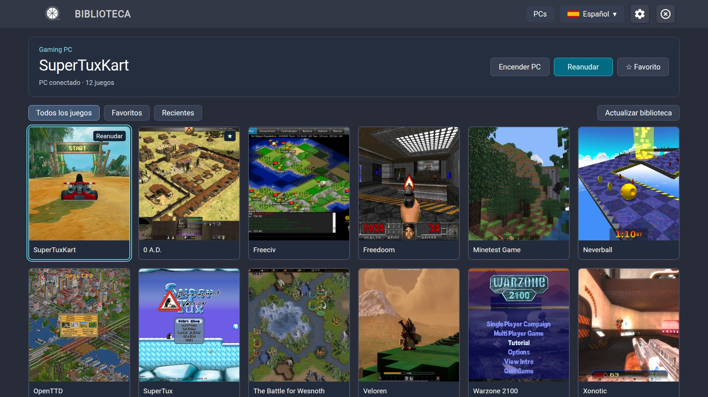
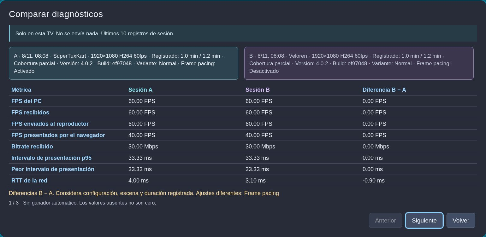

JUEGOS DE PC. COMODIDAD DE SALÓN.
Tus juegos.
A lo grande.
Lleva tu biblioteca del PC a tu TV Samsung. Elige un juego, toma el mando y ponte cómodo.

DEL ESCRITORIO AL SOFÁ
Tres pasos hasta la próxima partida.
Un PC, un televisor compatible y un mando. Te guiamos con el resto.
ENTIENDE TU TRANSMISIÓN
Una buena configuración empieza con buenas respuestas.
Activa estadísticas cuando las necesites. Consulta las diez últimas sesiones, compara dos cualesquiera y observa qué cambió.
Descubre el diagnóstico localSolo en tu TV. No se envía nada.

MENOS DUDAS. MÁS JUEGO.
Tu siguiente paso está aquí.
Instalar y actualizar
Elige el paquete, prepara el televisor y conserva tus ajustes al actualizar.
PC y emparejamiento
Configura el host una vez. El emparejamiento enlaza tu TV con el ordenador correcto.
Jugar y menú del juego
Inicia una partida, vuelve después y elige exactamente cómo salir.
Ajustes
Seis categorías, con el efecto de cada opción a mano.
Asignación de controles
Reasigna comandos del juego, comprueba botones físicos y ajusta sticks sin cambiar la navegación de los menús.
Diagnóstico local
Activa cuando lo necesites, consulta en tu TV y compara sesiones con contexto.
Resolver problemas
Empieza por el síntoma. Cambia una cosa y comprueba el resultado.
Acerca de y referencias
VibeLight es un fork de Moonlight Tizen para transmitir juegos del PC a TVs Samsung.